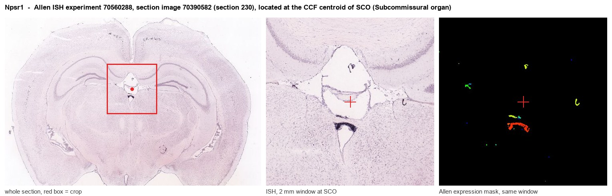
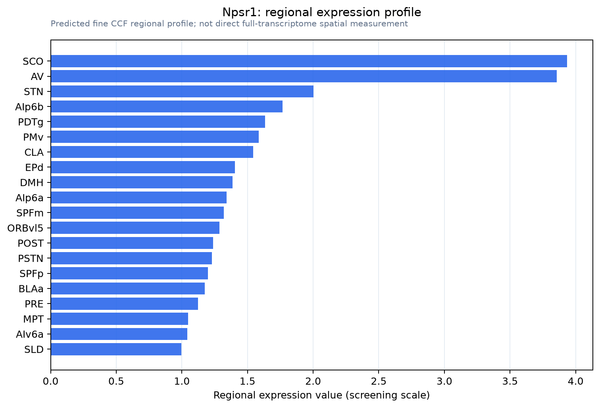

Npsr1
Neuropeptide S receptor (G protein-coupled receptor 154) (G protein-coupled receptor PGR14)
Spatial tier: RESTRICTED · Class: GPCR · Top region: SCO (Subcommissural organ) · Positive regions: 17/554
44.6Discovery Score
41.8Targetability Score
CEvidence grade C
What this means: Npsr1: fine CCF profile is restricted toward SCO (top regions: SCO, AV, STN, AIp6b, PDTg; 17 positive regions); direct spatial validation is still required.
Function in SCO: evidence, prediction, innovation
- Gene function
- Npsr1 encodes the neuropeptide S receptor (GPR154), a class A GPCR coupling to Gs and Gq for the 20-amino-acid peptide neuropeptide S, which is made by a small pontine cell group near the locus coeruleus. NPS-NPSR1 signalling has the unusual combination of increasing arousal and wakefulness while reducing anxiety; human NPSR1 variants are associated with asthma and with anxiety phenotypes.
- Region function
- The subcommissural organ is a tiny ependymal secretory gland at the entrance of the cerebral aqueduct beneath the posterior commissure; it releases SCO-spondin into the CSF, where it condenses into Reissner's fibre, and its failure causes aqueductal stenosis and hydrocephalus.
- Published in this region
- inferred No region-specific literature found. Rodent NPSR1 mRNA and binding are concentrated in amygdala, midline thalamus, hypothalamus and cortex, and the established Npsr1 phenotypes are behavioural: knockout mice show altered anxiety and arousal responses (Duangdao 2009), NPS is anxiolytic and arousing in mice (Leonard 2008), and a knock-in of the human rs324981 variant changes emotionality and cognitive flexibility (Rappeneau 2025).
- Predicted function
- Prediction: a genuine SCO signal would be unusual and, if confirmed, would most plausibly link arousal state to CSF secretion: Gs/Gq activation of SCO ependymocytes would raise cAMP and calcium and stimulate SCO-spondin release, coupling wakefulness to CSF composition and flow. The test is intracerebroventricular NPS with SCO-spondin and Reissner's-fibre readouts rather than behaviour, since an SCO-restricted Npsr1 deletion is not predicted to change anxiety or arousal. Note that the midbrain SCO region borders periaqueductal tissue where NPSR1 expression is better supported.
- Innovation
- ★★★☆☆ 3/5 NPSR1 itself is well studied behaviourally, so novelty here rests entirely on an SCO localisation that still needs validating.
- Tools
- Npsr1 knockout mice (Duangdao 2009) and the rs324981 knock-in line (Rappeneau 2025); NPS peptide agonist; antagonists SHA 68 and the naphthopyranopyrimidine series; anti-NPSR1 antibodies; FoxJ1-CreER for ependymal targeting; no Npsr1-Cre in common use.
- References
Direct evidence located at the region

Allen ISH experiment 70560288, section image 70390582 (section 230): the section that contains the CCF centroid of Subcommissural organ according to the Allen image-to-atlas alignment (reference_to_image), with a 2 mm window around that point. Left: whole section, red box = window. Middle: ISH signal. Right: Allen's expression-mask view of the same window. open this image in the Allen viewer
Look it up yourself: Allen Mouse Brain ISH for Npsr1Allen reference atlas: SCO (structure 599626923)ABC Atlas MERFISH viewer(in the ABC Atlas choose dataset MERFISH-C57BL6J-638850-CCF, colour cells by gene "Npsr1" or by parcellation_substructure "SCO")All genes confined to SCO + 3-D brain
Direct spatial evidence
MERFISH REGION LOCATOR

Regional expression figure

Predicted WMB × fine-CCF profile; not direct full-transcriptome spatial measurement.
Spatial profile
Evidence and specificity
- Evidence status
- PREDICTED_FINE
- Direct sources
- None; predicted localization only
- Exclusive threshold
- 12 positive regions out of 554
- Spatial specificity
- 0.317
- Top-region fraction
- 0.076
- Filter status
- PASS
Interpretation limits
- Cell-type-to-region projection is imputed expression, not direct spatial measurement.
- Adult reference atlases do not establish stability across age, sex, strain, state, or disease.
- Transcript abundance does not guarantee protein abundance or genetic-tool performance.